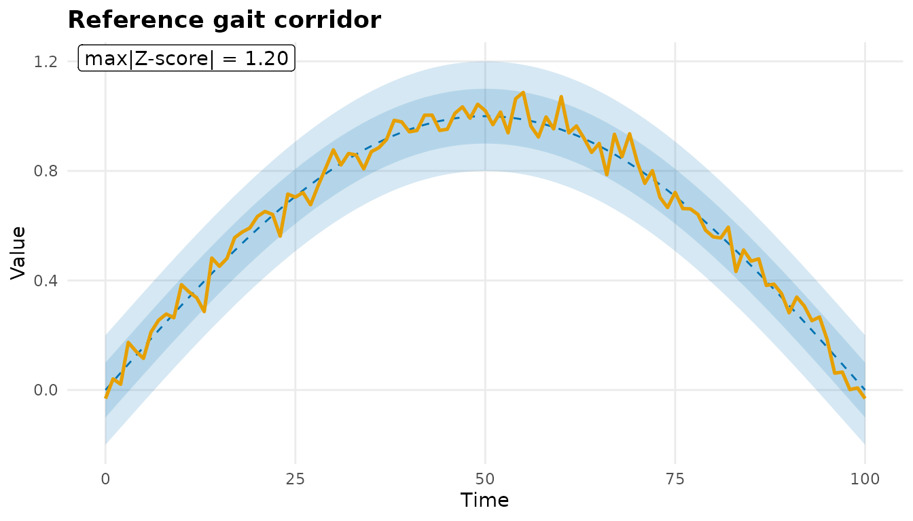
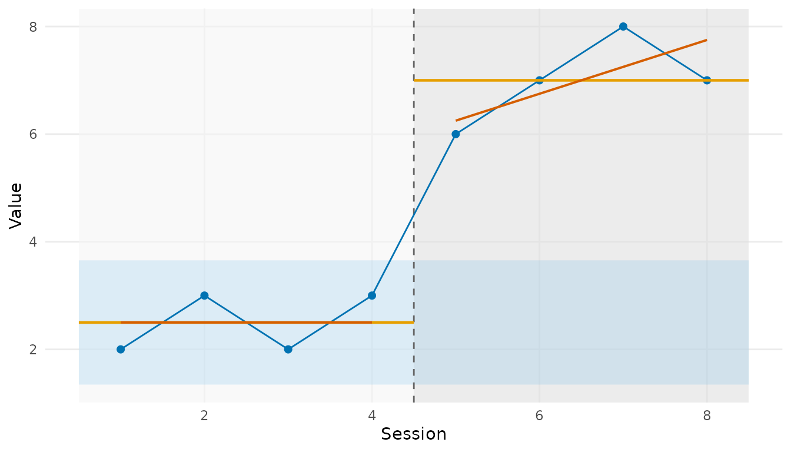

Building blocks of a clinical outcome report
Source:vignettes/clinical-reporting.Rmd
clinical-reporting.RmdPhysioReport assembles parameterized, bilingual, colorblind-safe
clinical reports (gait, HRV, EMG) with normative overlays and change
annotated against measurement-error thresholds. This vignette walks the
reusable building blocks that a full report is made of. Everything here
runs offline on the package’s hard dependencies
(PhysioExperiment and ggplot2).
Normative reference and z-scores
A NormativeModel describes the expected mean/SD of a
measurement – as a scalar, a per-timepoint waveform corridor, a
stratified table, or a lookup function. normativeZScore()
standardizes an observation against it.
speed_norm <- NormativeModel(mean = 1.30, sd = 0.15, source = "Bohannon 1997")
speed_norm
#> <NormativeModel>
#> kind: scalar
#> mean = 1.3, sd = 0.15
#> source: Bohannon 1997
normativeZScore(c(0.90, 1.30, 1.55), speed_norm)
#> [1] -2.666667 0.000000 1.666667plotNormativeBand() draws the graded +/-1 SD and +/-2 SD
corridor and overlays an observed trajectory – here a knee-flexion
gait-cycle waveform:
knee_norm <- NormativeModel(
mean = sin(seq(0, pi, length.out = 101)),
sd = rep(0.1, 101),
time = 0:100,
source = "Reference gait corridor"
)
set.seed(1)
observed <- sin(seq(0, pi, length.out = 101)) + rnorm(101, 0, 0.05)
plotNormativeBand(observed, knee_norm)
#> Warning: replacing previous import 'S4Arrays::makeNindexFromArrayViewport' by
#> 'DelayedArray::makeNindexFromArrayViewport' when loading 'SummarizedExperiment'
Change against MDC and MCID
annotateChange() classifies each pre-to-post change as
no change, detectable (clears the Minimal Detectable
Change), or clinically meaningful (clears the Minimal
Clinically Important Difference), tracking benefit direction so that
decrease-is-good metrics (pain, timed tests) are handled correctly.
chg <- annotateChange(
pre = c(fma = 20, pain = 7),
post = c(fma = 31, pain = 4),
mdc = c(5.2, 1.0),
mcid = c(9, 2),
direction = c("increase", "decrease")
)
chg[, c("metric", "change", "classification")]
#> <change_annotation> 2 metric(s)
#> metric change classification
#> fma 11 clinically meaningful (>MCID)
#> pain -3 clinically meaningful (>MCID)Single-case designs
For n-of-1 / single-case experimental designs,
plotSCED() draws the SCED-standard overlays (phase shading,
per-phase means, the baseline +/-2 SD band, and split-middle celeration
lines):

(The effect-size summary scedStats() delegates to the
peer-reviewed estimators in the optional PhysioClinStats
package.)
Bilingual labels
Every axis label and caption flows through
physioLabel(), so the same report renders in English or
Japanese:
c(en = physioLabel("session", "en"), ja = physioLabel("session", "ja"))
#> en ja
#> "Session" "セッション"Where to go next
-
?NormativeModel/?plotNormativeBand– normative corridors. -
?annotateChange/?plotChangeAnnotated– MDC/MCID change. -
?clinicalGaitReport/?renderClinicalReport– the full parameterized gait/HRV/EMG reports (some need optional ecosystem packages, e.g.PhysioMoCap,officer).